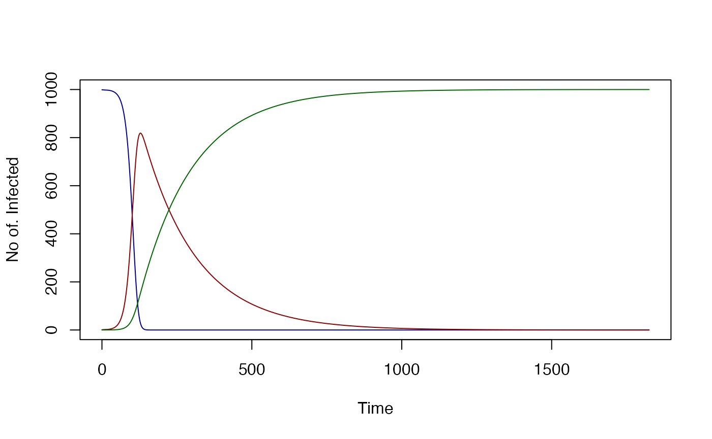
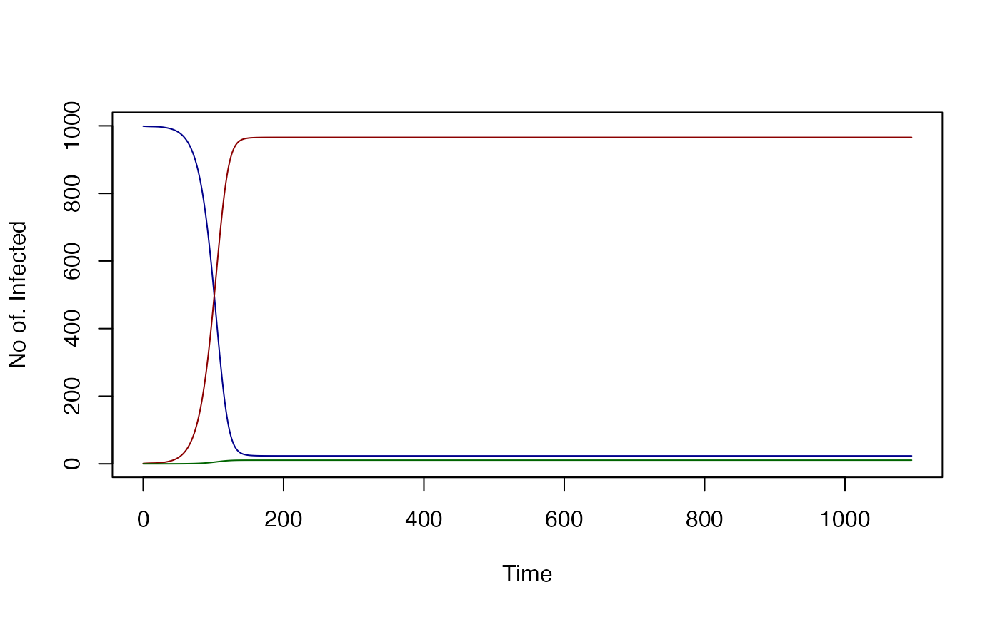
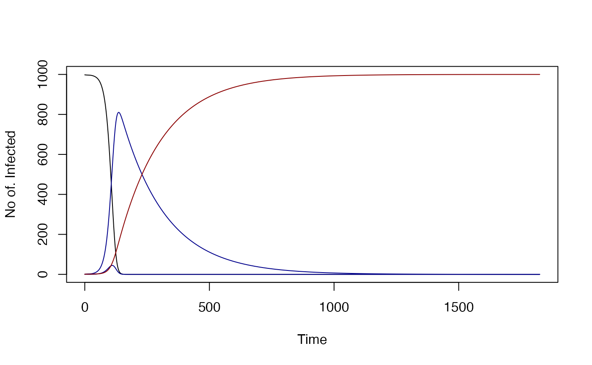

Compartmental Models
September 20, 2025
Source:vignettes/Compartmental-Models.Rmd
Compartmental-Models.RmdIn this vignette, we describe four basic compartmental models for
mosquito-borne pathogens commonly used for humans in
ramp.library. The models are named by their states:
susceptible (S) - exposed (E) infected (I) - recovered and immune (R),
and vaccinated (V). According to their setup, not all models include all
of the states. There are four compartmental models: SIR, SIRS, SEIR, and
SEIRV. The other models including SIS, SEI and SIP and SEIS are
described in the ramp.xds.
Model Variables
\(S\) is the density of susceptible humans
\(E\) is the density of exposed humans
\(I\) is the density of infected humans
\(R\) is the density of recovered and immune humans
\(V\) is the density of vaccinated humans
\(H\) is the density of humans
Parameters
\(r\) is the rate infections clear
\(b\) is the fraction of bites by infective mosquitoes that transmit parasites and cause an infection.
\(c\) is the fraction of bites on an infectious human that would infect a mosquito.
\(\varepsilon\) proportion of recovered individuals progressing into vaccinated class
\(\alpha\) is a proportion of vaccinated humans
\(\tau\) is the rate at which exposed humans become infectious (incubation rate)
\(\gamma\) rate at which recovered human loss their immunity
\(\delta\) proportion of recovered humans progressing to vaccinated class
Dynamics
The models defined herein is defined in two parts. To model exposure and infection (i.e. the conversion of EIR into FoI (h)), The equations are formulated around \(h\). Under the default model, we get the relationship \(h=bE\), where E is the daily EIR:
The dynamics of Susceptible-Infected- Recovered (SIR) are given by:
\[ \begin{eqnarray*} \frac{dS}{dt} &=&B(H) - h S - \mu S\\ \frac{dI}{dt} &=& h S- (r +\mu) I\\ \frac{dR}{dt} &=& r I- \mu R \end{eqnarray*} \] Without demography i.e $ B(H) = = 0$, SIR model has steady states as \[ \bar{S} = 0, \quad \bar{I} =0, \quad \bar{R} = H\].
The dynamics of Susceptible-Infected- Recovered -Suscepitible (SIRS) are given by:
\[ \begin{eqnarray*} \frac{dS}{dt} &=& B(H) - h S + \gamma R - \mu S\\ \frac{dI}{dt} &=& h S- (r +\mu) I\\ \frac{dR}{dt} &=& r I- (\mu+ \gamma) R \end{eqnarray*} \] Without demography, the SIRS model has the following steady states as
\[ \begin{eqnarray*} \bar{I} &=& \frac{h H\gamma}{r\gamma + h(\gamma+r) }\\ \bar{R} &=& \frac{h r H}{r\gamma + h(\gamma+r) }\\ \bar{S} &=& H- \bar{I}-\bar{R} \end{eqnarray*} \]
The dynamics of Susceptible -Exposed -Infected- Recovered (SEIR) are given by:
\[ \begin{eqnarray*} \frac{dS}{dt} &=& B(H) - h S - \mu S\\ \frac{dE}{dt} &=& hS - \tau E- \mu E\\ \frac{dI}{dt} &=& \tau E- (r +\mu) I\\ \frac{dR}{dt} &=& r I- \mu R \end{eqnarray*} \] Without demography, the SEIR model has the steady states given as \[ \bar{S} = 0, \quad \bar{E} = 0,\quad \bar{I} = 0,\quad \bar{R} = H\]
The dynamics of Susceptible-Infected- Recovered -Suscepitible- Vaccinated (SEIRV) are based on the are given by:
\[\begin{eqnarray} \frac{dS}{dt} &=&(1-\alpha)B(H) - h S + \gamma R - \mu S\\ \frac{dE}{dt} &=& h S - (\tau + \mu)E\\ \frac{dI}{dt} &= &\tau E - (r +\mu) I\\ \frac{dR}{dt} &=& (1-\varepsilon) r I- (\gamma+\mu) R\\ \frac{dV}{dt} &=& \alpha B(H)+ \varepsilon r I -\mu V \end{eqnarray} \] Without demography, the SEIRV has the following steady states: \[ \bar{S} = 0, \quad \bar{E} = 0,\quad \bar{I} = 0,\quad \bar{R} = 0,\quad \bar{V}= H\]
Terms
Net Infectiousness
True prevalence is:
\[x = \frac{X}{H}.\]
In our implementation, net infectiousness (NI) is linearly proportional to prevalence:
\[ni = c x.\]
Human Transmitting Capacity
After exposure, a human would remain infected for \(1/r\) days, transmitting with probability \(c\) so:
\[HTC= c/r\]
Example ramp.xds Setup
We run each of the models using a default setup with 1- stratum to equilibrium and compare our results with the analytic steady states given above
test_SIR<- xds_setup(MYname="macdonald", Xname="SIR")
xds_solve(test_SIR, 365*5) -> test_SIR
foi_eq = tail(test_SIR$outputs$orbits$XH[[1]]$foi,1)
unlist(get_XH_vars(test_SIR$outputs$last_y, test_SIR, 1)) -> inf
steady_state_X(foi_eq, 1000, test_SIR, 1) -> ss
xds_plot_X(test_SIR)
test_SIRS<- xds_setup(MYname="macdonald", Xname="SIRS")
xds_solve(test_SIRS, 365*3) -> test_SIRS
foi_eq = tail(test_SIRS$outputs$orbits$XH[[1]]$foi,1)
unlist(get_XH_vars(test_SIRS$outputs$last_y, test_SIRS, 1)) -> inf_SIRS
steady_state_X(foi_eq, 1000, test_SIRS, 1) -> ss_SIRS
xds_plot_X(test_SIRS)
test_SEIR<- xds_setup(MYname="macdonald", Xname="SEIR")
xds_solve(test_SEIR, 365*5) -> test_SEIR
foi_eq = tail(test_SEIR$outputs$orbits$XH[[1]]$foi,1)
unlist(get_XH_vars(test_SEIR$outputs$last_y, test_SEIR, 1)) -> inf_SEIR
steady_state_X(foi_eq, 1000, test_SEIR, 1) -> ss_SEIR
xds_plot_X(test_SEIR)
test_SEIRV<- xds_setup(MYname="macdonald", Xname="SEIRV")
xds_solve(test_SEIRV, 365*5) -> test_SEIRV
foi_eq = tail(test_SEIRV$outputs$orbits$XH[[1]]$foi,1)
unlist(get_XH_vars(test_SEIRV$outputs$last_y, test_SEIRV, 1)) -> inf_SEIRV
steady_state_X(foi_eq, 1000, test_SEIRV, 1) -> ss_SEIRV
xds_plot_X(test_SEIRV)
References
- Ross R. Report on the Prevention of Malaria in Mauritius. London: Waterlow; 1908.
- Ross R. The Prevention of Malaria. 2nd ed. London: John Murray; 1911.
- Smith DL, Battle KE, Hay SI, Barker CM, Scott TW, McKenzie FE. Ross, Macdonald, and a theory for the dynamics and control of mosquito-transmitted pathogens. PLoS Pathog. 2012;8: e1002588. doi:10.1371/journal.ppat.1002588